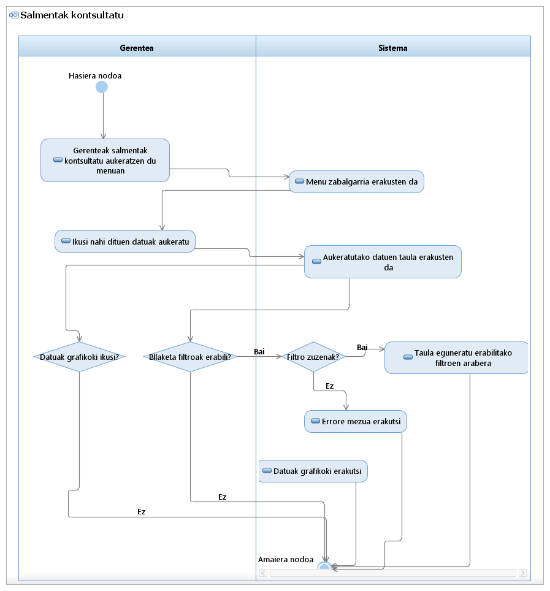

Visión general
Principio
Paquete
Elemento
Documentación UML de Salmentak
Use Case Model::Salmentak::Salmentak kontsultatu::Salmentak kontsultatu::Salmentak kontsultatu Activity Diagram
Diagrama Salmentak kontsultatu Activity Diagram

Propiedades:
Ver
Nombre
Salmentak kontsultatu Activity Diagram
Tipo
Activity Diagrama
Visión general
Principio
Paquete
Elemento
Documentación UML de Salmentak